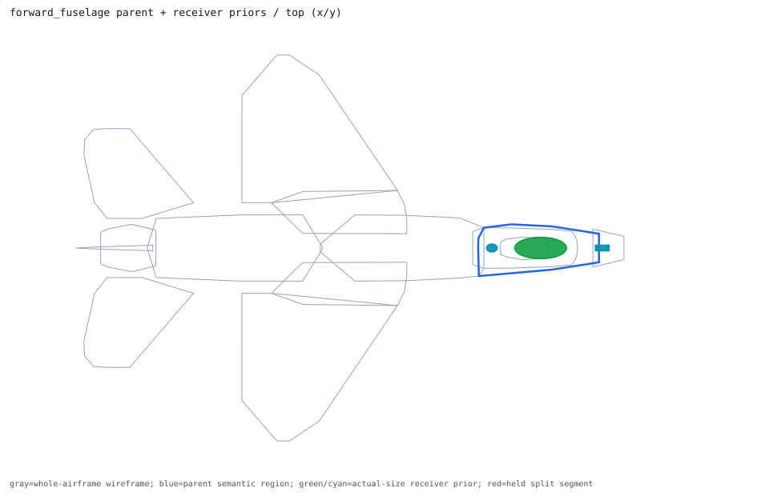
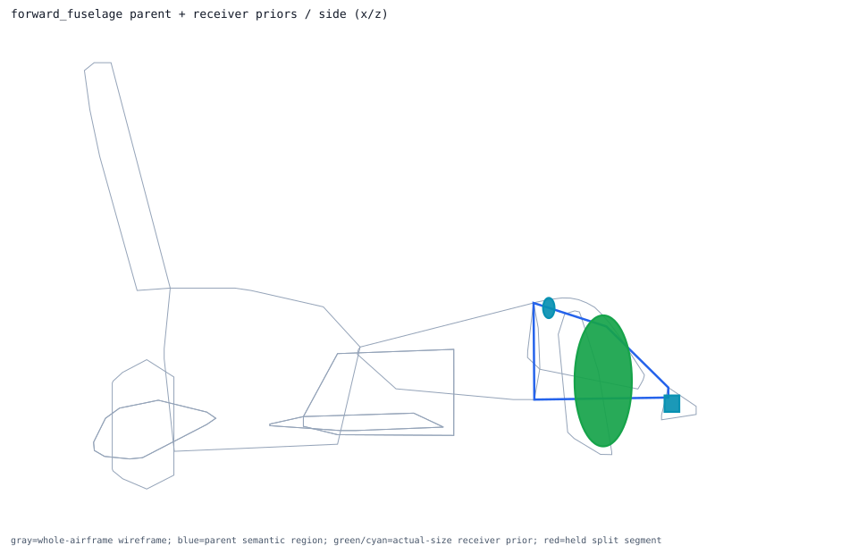
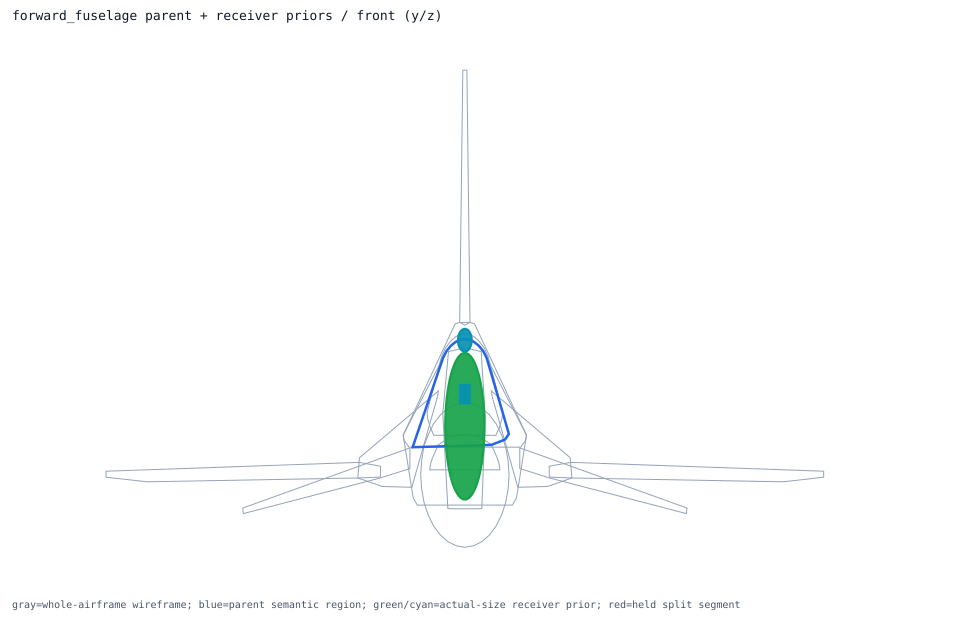

Back to parent-child layout index
semantic_forward_fuselage_skin_volume
obb parent -> forward_fuselage; receiver overlays 3; extra slots 2
Trace Details
- parent semantic component: semantic_forward_fuselage_skin_volume
- parent surface component: surface_forward_fuselage_skin
- outer model region: forward_fuselage
- volume role: forward_fuselage_skin_volume
- geometry primitive: obb
- primary receiver: cockpit_crew_station
- extra receivers: nose_avionics_bay, inertial_navigation_unit
- cross-region held receivers: none
- external held split segments: none
- parent handoff: direct_receivers_parse_ready
- layout policy: one_parent_semantic_shell_view_with_receiver_priors_overlaid
- runtime projection: review_only_visual_layout_not_runtime_activation
- child overlays:
- primary_receiver_overlay: cockpit_crew_station ellipsoid dims=[1.25, 0.508, 1.15]m evidence=public_partial_dimension_engineering_envelope segments=0 -> placed_inside_airframe_exceeds_parent_shell_review
- extra_receiver_overlay: nose_avionics_bay obb dims=[0.320548, 0.123952, 0.14351]m evidence=standard_enclosure_proxy_not_true_f16_bay segments=0 -> already_inside_whole_airframe
- extra_receiver_overlay: inertial_navigation_unit ellipsoid dims=[0.24892, 0.1778, 0.1778]m evidence=public_lru_dimension segments=0 -> already_inside_whole_airframe
- external held segment overlays:


